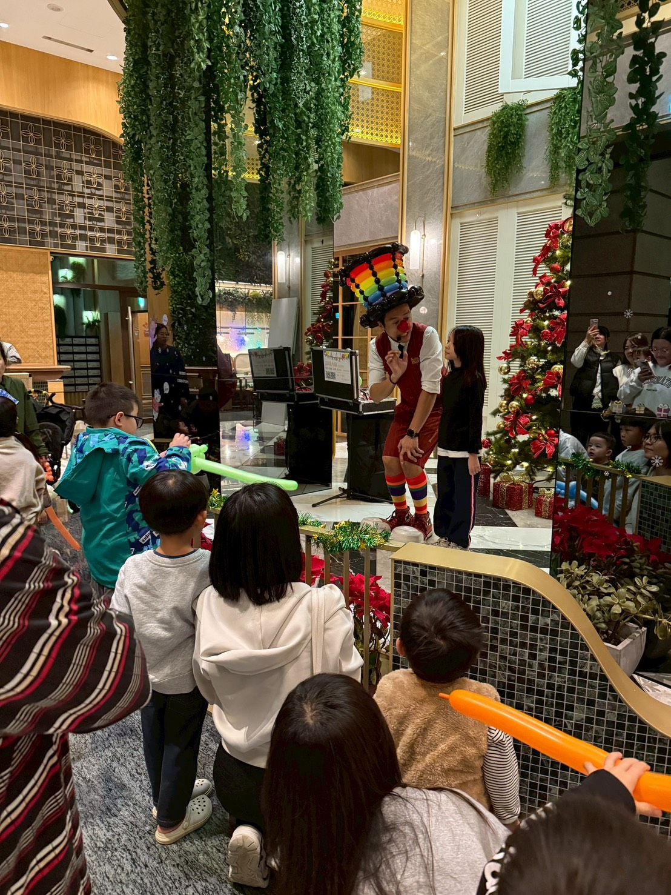
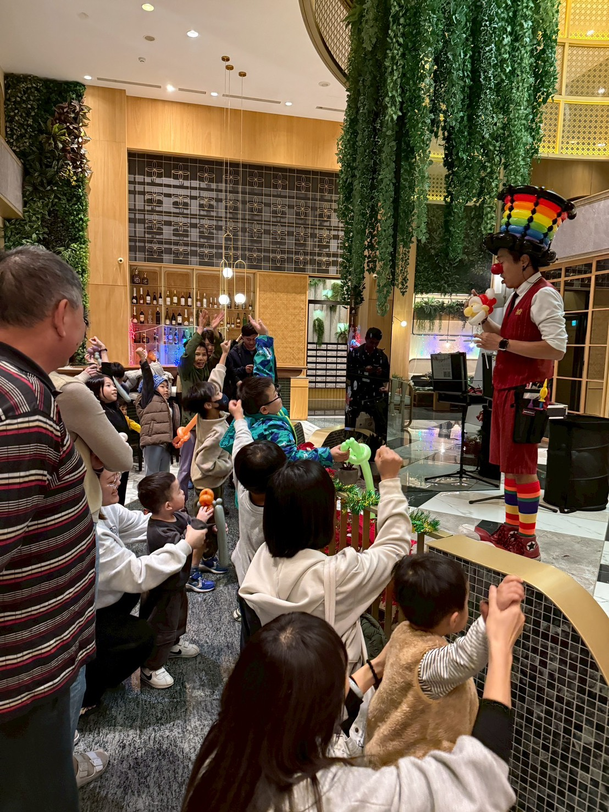
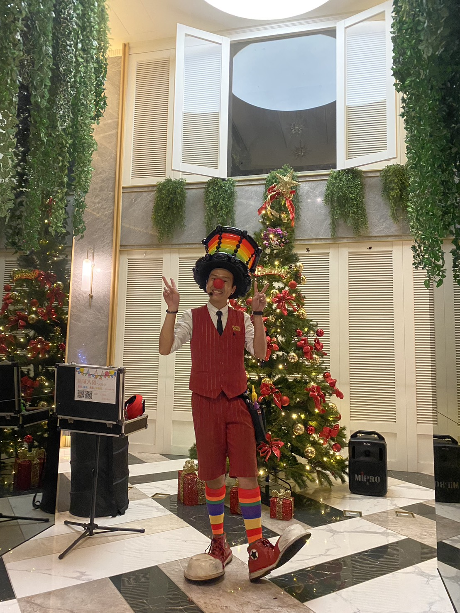

桃園楊梅聖誕晚會｜鼎藏大硯二期：氣球魔術秀 & 現場手折氣球雙重奏
青山一街的高質感聖誕夜，用精彩魔術開場，用精緻氣球留念
📍 地點：桃園市楊梅區青山一街（鼎藏大硯二期）
📌 服務型態： 舞台氣球魔術秀 + 現場定點手折氣球
🎪 活動類型： 鼎藏大硯二期社區聖誕晚會
📍 地點： 桃園楊梅（青山一街生活圈）
🎪 活動類型： 鼎藏大硯二期社區聖誕晚會
📍 地點： 桃園楊梅（青山一街生活圈）
叮叮噹！叮叮噹！隨著十二月的腳步接近，桃園楊梅也籠罩在濃濃的聖誕氣息中。這次非常開心能來到楊梅青山一街上的質感社區 鼎藏大硯二期，參與一年一度的社區聖誕晚會。本次管委會非常用心，特別安排了「氣球魔術舞台表演」搭配「現場造型氣球手折」的雙重服務，讓住戶不僅能看秀，還能把禮物帶回家！本場演出屬於氣球大叔 Sony 在 桃園楊梅社區活動 中的實際案例之一。

上半場：高互動魔術氣球秀
表演一開始，氣球大叔立刻化身孩子王！雖然是寧靜優雅的住宅區，但只要舞台燈光一亮，現場立刻變成歡樂的遊樂園。我準備了適合闔家觀賞的互動魔術與聖誕限定的造型氣球。照片中可以看到，當我問出「誰想要聖誕禮物？」的時候，台下的小朋友們幾乎是「暴動」式的舉手，那種純真的眼神與渴望，真的是身為表演者最大的成就感。

下半場：精緻手折氣球，人人有獎
舞台表演結束後，精彩的才正要開始！為了讓每位孩子都不帶著遺憾回家，我們緊接著安排了「現場折氣球」的時間。我戴上招牌的「彩虹高禮帽」，在聖誕樹旁為排隊的小朋友們客製化他們喜歡的造型。
不管是三麗鷗、寶可夢還是各種經典IP氣球，透過我快速的雙手變出來，不僅減少了家長排隊等待的時間，更讓這份歡樂能延續到家裡。這種「看得到表演，拿得到禮物」的安排，是社區活動滿意度最高的組合！

"這次邀請 Sony 大叔真的超值！原本以為只有表演，沒想到還有手折氣球的服務。小朋友看完表演還能拿到自己喜歡的氣球，大家都超級開心，家長們也覺得管委會這次活動辦得很用心。"
🎈 正在尋找楊梅社區活動的最佳方案？
「魔術表演 + 氣球手折」 是社區晚會、家庭日的黃金組合！
氣球大叔 Sony 長期深耕大桃園地區，提供 楊梅社區晚會表演、氣球定點發送服務、社區節慶魔術互動 等多元方案。我們熟悉楊梅青山一街周邊社區的場地特性，能為您規劃最流暢的活動動線。
- 雙重享受方案：30分鐘舞台秀 + 60分鐘定點折氣球（推薦！）
- 節慶專屬造型：聖誕節、萬聖節、中秋節主題氣球製作。
- 專業互動引導：讓害羞的小朋友也能開心參與。